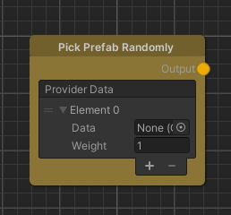
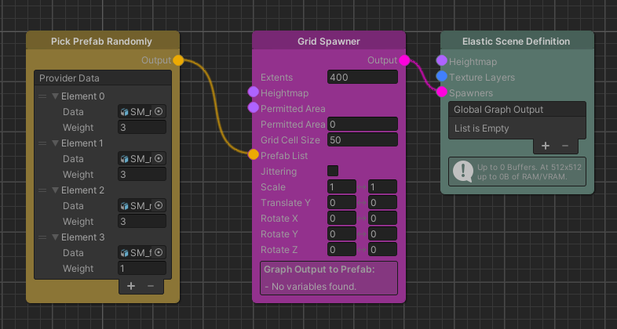

Pick Prefab Randomly
Overview
The Pick Prefab Randomly node selects a prefab from the list based on chance, with elements having a higher weight being more likely to be selected.

Detailed Explanation
The idea of this node is to provide Prefabs to other nodes. Which Prefab of the list will be returned is generally random but the chance can be influenced by the weight a Prefab is given. The higher the weight, the likelier the Prefab is getting selected. To be precise, the chance is equal to the weight of the Prefab divided by the sum of all weights. While the selection process is using weighted randomness, the same position will return the same Prefab to keep the scene consistent.
This can be used in cases where some elements should be spawned more often than others or simply to spawn different variations with the same chance.
Parameters
Controls
| Name | Type | Description |
|---|---|---|
| Provider Data | List of elements with Prefab and Weight | The list of Prefabs and their associated weights from which an element will be selected. |
Use Cases
Spawning Object Variants

This example shows a simple spawner setup that spawns different object variants on a grid. Using different object variations can help to break up the repetition and thus improve the feel of the game. In this example we made the first three options equally likely to be spawned and the last option more rare by giving it a lower weight.